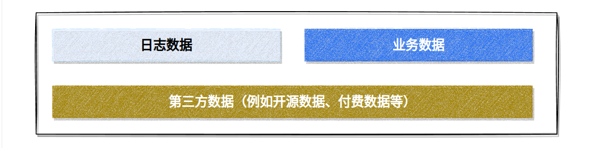
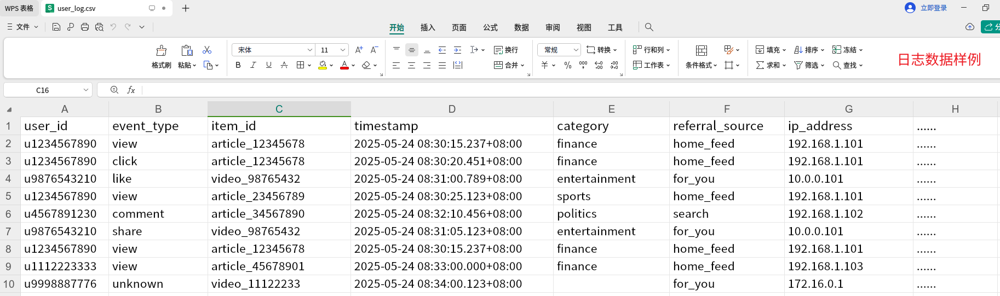
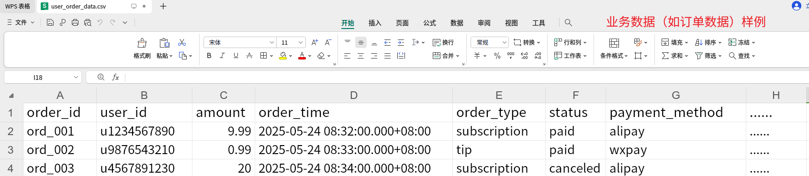
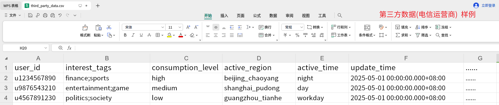
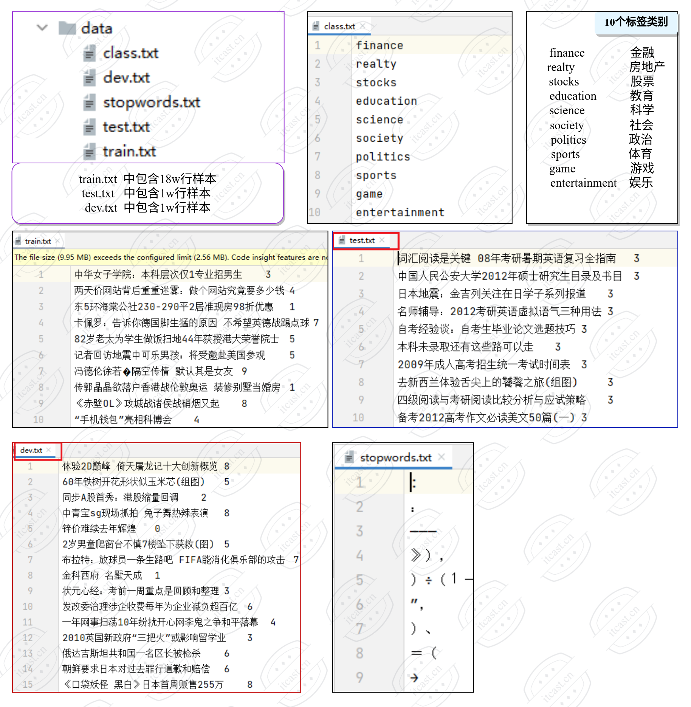

2.1 数据集介绍¶
学习目标
- 了解数据类型与数据来源
- 熟悉投满分数据样例和格式
- 理解投满分数据基础分析
1. 数据类型¶

1.1 日志数据¶
定义：日志数据是通过应用程序自动记录的事件数据，通常以非结构化或半结构化形式存储（如TXT、JSON），捕捉用户行为、系统操作或错误信息。日志数据高频、实时、规模大，常含噪声和缺失值，需清洗和处理。日志有很多种，例如包括用户行为埋点日志、app系统性能埋点日志（例如API响应时间）、广告埋点日志、搜索埋点日志等等。
特点：高频（秒级/分钟级），每日亿级至十亿级行甚至更多，具体取决于业务本身。
用途：行为分析、推荐优化、风控、系统监控、AI所需模型特征开发等。
示例：
用户行为埋点日志，记录用户在头条App的交互，如浏览文章、点击视频、点赞等。基于这样的行为数据可以用于推荐等场景。
view用户打开文章或视频页面，页面加载完成时触发；click，用户点击标题、按钮或链接（如“阅读更多”）时触发等。

1.2 业务数据¶
定义：业务数据是公司核心业务流程生成的数据，结构化存储在数据库（如MySQL、Hive），记录业务实体或交易，字段明确，更新频率较低。
特点：更新在每日/每小时。结构化，数据量中等（百万至千万级行），具体取决于业务本身。
用途：业务分析、报表、模型特征、用户画像等。
示例：
订单类数据记录用户付费行为（如订阅会员、打赏），用户类数据记录用户信息和画像（如年龄、兴趣偏好），通过 user_id 关联日志数据（用户行为）和其他业务数据（如文章元数据），为推荐模型提供静态特征。

1.3 第三方数据¶
定义：第三方数据是从外部合作伙伴、公开数据集或API获取的数据，非公司内部生成，格式多样，质量参差不齐。
特点：格式多样，数据量小至中等（千行至百万级行等）。且需整合清洗，可能涉及费用。
用途：丰富特征、增强模型上下文、补充画像等。
示例：
电信运营商提供的用户画像数据，基于用户通话、流量使用、地理位置等生成兴趣标签、消费能力、行为特征，增强推荐系统精准性。

2. 项目数据概览¶
本次是属于内部项目，实际项目中的数据来源有多种情况，本次的数据是第①中情况，即公司数据平台提供成品数据:

第一类: 内部项目，公司内部数据部门提供
- 情况1: 数据平台有预处理, 提供的是"成品数据".
- 情况2: 数据平台没有预处理, 只告诉开发人员"数据路径".
- 情况3：数据平台有部分数据，但需要增加第三方数据.
- 情况4: 原始数据就没有, 需要开发人员沟通不同部分, 来最终得到数据.
第二类: TOB项目，甲方提需求, 并提供数据
- 情况1: 甲方有预处理数据, 提供的基本是"半成品数据".
- 情况2: 甲方只负责"埋点", 后续数据需要开发人员处理.
- 情况3: 甲方数据"匮乏", 甚至数据"缺失".
第三类: 其他
- 实际可能还存在其他情况，这里不继续拓展。
3、投满分项目数据集¶
以下是投满分项目数据集，这里快速预览，接下来的会在 2.2 数据集分析 小节着重展开。
数据位置：TMFCode/01-data

数据文件：
数据位置：TMFCode/01-data
class.txt 为标签文件，包含10个类别标签, 每行一个标签, 为英文单词的展示格式.
train.txt 为18w条样本，10个类别，每个类别是1.8w。每行包括两列, 第一列为文本, 第二列是标签, 中间用\t作为分隔符.
test.txt 为1w条样本，每行包括两列, 第一列为文本, 第二列是标签, 中间用\t作为分隔符.
dev.txt 为1w条样本，每行包括两列, 第一列为文本, 第二列是标签, 中间用\t作为分隔符.
4. 小结¶
- 本小节主要介绍了数据类型以及本次投满分项目数据来源、以及数据整体概览。